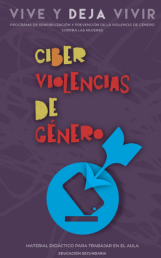
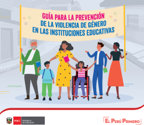
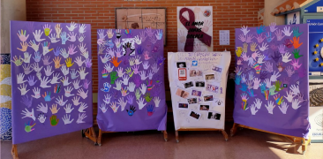

Educación y prevención
- Guía para la prevención y actuación ante la violencia de género en el ámbito educativo: Guía dirigida al ámbito educativo, que aborda cómo prevenir la violencia de género, especialmente al inicio de relaciones entre adolescentes. Conducción
- Sensibilización y prevención contra la violencia de género en adolescentes y jóvenes: Guía de orientaciones y herramientas. Dirigida al profesorado de secundaria, contiene bloques teóricos y también propuestas didácticas listas para usar. fundacionmujeres.es
- Guía educativa para jóvenes: Cómo vivir relaciones de género. Un material que aborda sexualidad sana, consentimiento, violencia digital, etc., en lenguaje joven. Injuve
- Caja de Herramientas – Igualdad y violencia de género: Recoge dinámicas, actividades y herramientas para trabajar con adolescentes desde una mirada crítica e inclusiva. amg.es
- Guía sobre detección de violencia de género en entornos educativos: Documento que incluye factores de riesgo, indicadores y orientaciones para detectar violencia de género en entornos escolares. atencionygdl.es



Sección específica para jóvenes o entornos escolares
- La guía para adolescentes y jóvenes mencionada antes brinda fichas de actividades: debates, vídeos, materiales jóvenes para el aula. fundacionmujeres.es
- La campaña “Vive y deja vivir” incluye contenido audiovisual con canciones, vídeos y materiales de sensibilización. Bienestar y protección social
- Una guía para la prevención de violencia en citas: señales de alerta, tipos de violencia, intervención temprana, protección personal y búsqueda de ayuda. atencionmujerejoven.es
Actividades recomendadas
- Debates clase: ¿Qué es una relación igualitaria? ¿Cuáles son signos de control o violencia?
- Role–play / dramatización: Escenario donde jóvenes deben aprender conducta de respeto, comunicación y apoyo. Útil en sesiones grupales.
- Campañas audiovisuales: Vídeos cortos en TikTok o Instagram que reflejen “mi relación ideal”, “cómo me siento seguro/a con mi pareja”, “qué actitudes no son amor”.
- Carteles informativos: Crear un tablero visible con mensajes clave sobre igualdad, mitos del amor romántico, consentimiento y relaciones sanas.
- Testimonios reales: Mostrar una campaña como FGE — “No es ficción” — que usa historias reales de violencia digital, acoso y chantajes.
- Trabajo grupal: Creación de un póster, vídeo corto, campaña en redes con enfoque positivo: relaciones sanas, respeto y autoestima.

Recursos descargables / simulados
- Las guías mencionadas anteriormente tienen fichas listas para imprimir o usar digitalmente. Ej.: la “Caja de Herramientas” incluye dinámicas por temática.
- Material descargable en PDF: actividades contra la violencia machista y materiales de aula basados en igualdad y corresponsabilidad.
- Ejemplos de dinámicas que suelen incluirse en “Ministerio de Igualdad”: actividades + vídeos + materiales didácticos + propuestas de autoevaluación para alumnado de 12–18 años.
- Propuestas para imprimir: “Detectar señales en mi entorno” dirigidas al alumnado.